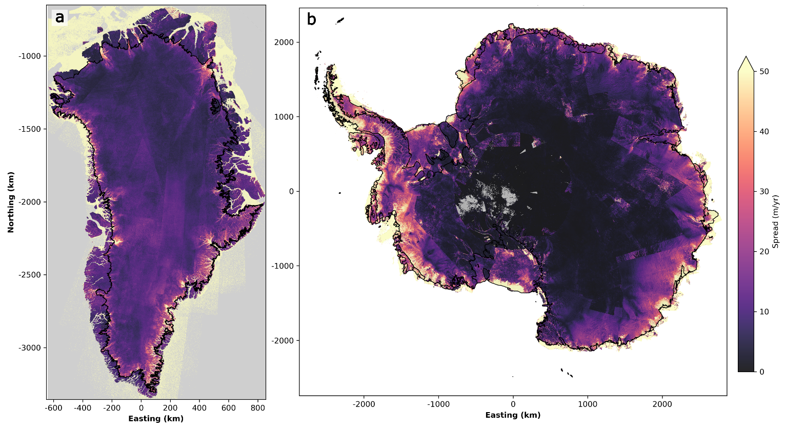
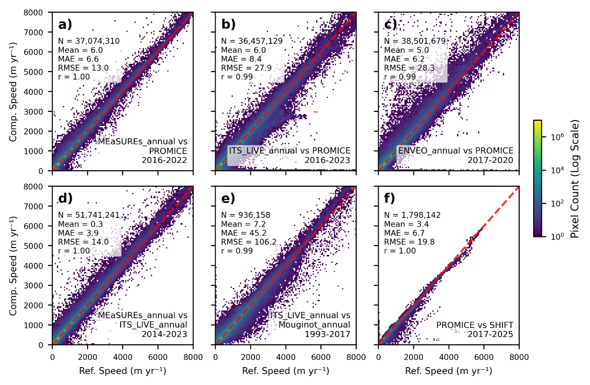
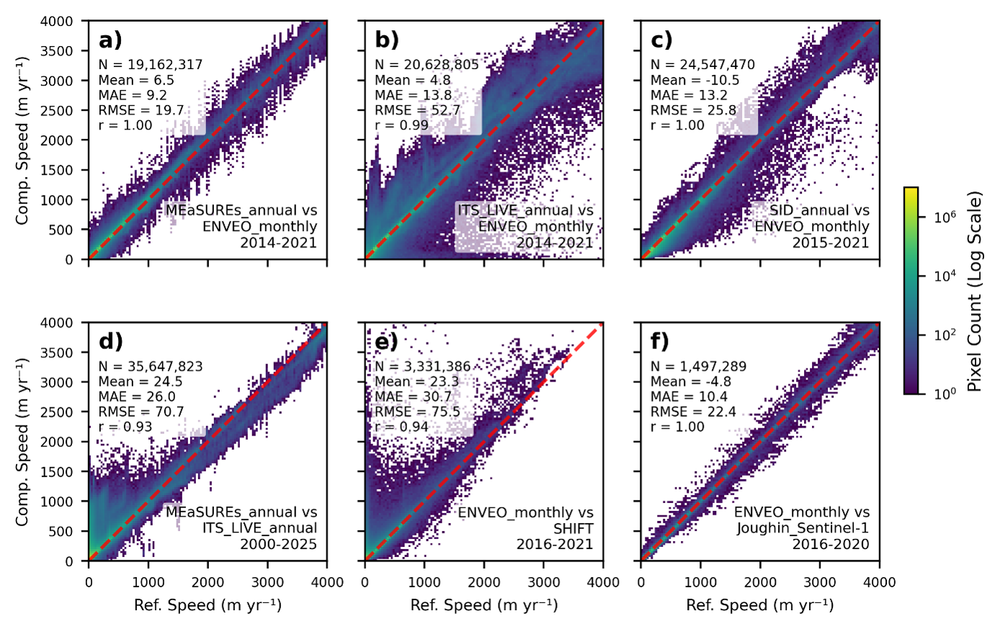

Comparison of Contributing Datasets#
Discrepancies between ice velocity products can arise from a range of methodological choices, including, but not limited to:
The image patch size used in offset tracking procedures (Lei et al. 2022).
The displacement calculation algorithms, particularly those used for determining the centre of the cross-correlation peak with sub-pixel accuracy (Guizar-Sicairos et al. 2008).
The choice of Digital Elevation Model (DEM) for orthorectification and three-dimensional velocity calculations (Chudley et al. 2022; Joughin et al. 2018b).
Image pair co-registration procedures (Rosenau et al. 2015; Merryman Boncori et al. 2018).
Outlier detection, gap-filling, and smoothing algorithms (Joughin et al. 2018a; Lüttig et al. 2017). Furthermore, apparent velocity differences can emerge due to variations in satellite mission spatial resolutions, as well as the specific temporal baselines over which individual velocity fields were measured or averaged to form a composite product.
To ensure fair comparisons that account for differing temporal resolutions, we evaluated the discrepancies between Contributing Datasets incorporated into the Unified Dataset using two procedures. We performed these comparisons using the Unified Dataset itself (i.e. after interpolation to a common grid).
First, within each spatial cell, we estimated the median velocity range among all Contributing Datasets during common annual periods (Figure 6).
Second, we examined the differences between specific pairs of Contributing Datasets that share significant temporal overlap (Figures 7 and 8). For the latter, we calculated the time-averaged ice velocity in each spatial cell during the overlapping period. We truncated these periods to focus on times of maximum data density; for example, while the true overlapping period of the “Mouginot annual” and “ITS_LIVE annual” Greenland datasets spans 1985 to 2017, we restricted our comparison to 1993-2017 to avoid the high frequency of Not-a-Number (NaN) values in the earlier part of the record. During these overlaps, time averages were only calculated for spatial cells containing successful (non-NaN) velocity retrievals for at least 70% of the period, ensuring a representative average speed.

Fig. 40 The median spread in measured ice speed amongst all contributing datasets, calculated across all annual periods with more than one contributing dataset.#
Overall, the Contributing Datasets compare very well (Figures 6-8). The velocity spread among all datasets is typically less than 100 m/yr and differences are greater in faster-flowing regions than in slower-flowing regions (Figure 6). The root-mean-square error (RMSE) between pairs of Contributing Datasets varies from 14.0 to 106.2 m/yr (Figures 7 and 8), which generally falls within the formal error margins of the individual datasets. However, notable systematic differences occasionally exceed these formal errors. For instance, in the Unified Dataset for Antarctica, the “ITS_LIVE annual” Contributing Dataset frequently overestimates ice speed in slower-flowing areas (<1000 m/yr) and underestimates it in faster-flowing regions (>2000 m/yr) when compared to the “MEaSUREs annual” Contributing Dataset during the period 2000 to 2025 (Figure 8d). We note that a six-month offset exists between the annual Measurement Epochs of these two products, meaning some discrepancies may result from the aliasing of seasonal flow variations (Tuckett et al. 2019; Wallis et al. 2023; Boxall et al. 2022). Similarly, the Antarctic “ITS_LIVE annual” Contributing Dataset tends to indicate faster flow speeds than the “ENVEO monthly” Contributing Dataset in regions exceeding 3000 m/yr. We note that there is a significant caveat to these comparisons: for Contributing Datasets created by mosaicking multiple satellite image pairs over differing time periods (i.e., all datasets except “SHIFT”), there is typically incomplete metadata regarding the temporal distribution of velocity observations within each averaging period. Therefore, despite our best efforts to ensure fair comparisons between Contributing Datasets, these comparisons should be interpreted cautiously.

Fig. 41 Comparisons of selected pairs of contributing Greenland datasets during their overlapping periods with sufficient valid data fractions. The reference dataset and comparison dataset are labelled in the bottom right of each panel (for example, in panel (a), the reference dataset is MEaSUREs_annual because it has a lower temporal resolution than PROMICE). The statistics in the top left of each panel show the number of pixels (N) compared, the mean difference, the mean absolute difference (MAE), the root mean square error (RMSE) and the Pearsons correlation coefficient (r) between the two datasets.#

Fig. 42 Comparisons of selected pairs of contributing Antarctica datasets during their overlapping periods with sufficient valid data fractions. The reference dataset and comparison dataset are labelled in the bottom right of each panel (for example, in panel (a), the reference dataset is MEaSUREs_annual because it has a lower temporal resolution than ENVEO_monthly). The statistics in the top left of each panel show the number of pixels (N) compared, the mean difference, the mean absolute difference (MAE), the root mean square error (RMSE) and the Pearsons correlation coefficient (r) between the two datasets.#